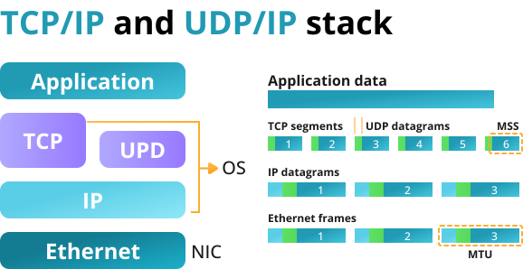

Chapter 9: TCP & UDP
Overview
This chapter explores TCP (Transmission Control Protocol) and UDP (User Datagram Protocol), the two primary transport-layer protocols used in network programming. Understanding their differences, behavior, and appropriate use cases is essential for building reliable and efficient networked applications.
Key topics covered in this chapter include:
- Introduction to TCP and UDP
- Protocol features and differences
- Socket programming with TCP vs. UDP
- Packet structure and communication flow
- When to use TCP or UDP
- Examples in C and common debugging tools
Introduction to TCP and UDP
TCP and UDP are protocols used for sending data over networks. They sit above the IP layer in the protocol stack and differ primarily in how they handle reliability, ordering, and connection management.

TCP: Transmission Control Protocol
TCP is a connection-oriented, reliable, and stream-based protocol. It ensures data is delivered in order and without duplication.
Key TCP Features:
- Connection establishment (3-way handshake)
- Reliable delivery with acknowledgments
- Flow and congestion control
- Ordered byte stream
TCP Communication Flow:
- Client calls
connect()to initiate communication. - Server calls
listen()andaccept()to establish the connection. - Data is exchanged using
send()andrecv(). - The connection is closed using
close().

UDP: User Datagram Protocol
UDP is a connectionless, unreliable, and message-based protocol. It is suitable for applications where speed is critical and some data loss is acceptable.
Key UDP Features:
- No connection setup
- No guarantee of delivery or order
- Low overhead and latency
- Messages (datagrams) are sent as discrete packets
UDP Communication Flow:
- No connection is established.
- Data is sent with
sendto()and received withrecvfrom().

TCP vs. UDP Comparison
| Feature | TCP | UDP |
|---|---|---|
| Connection | Yes | No |
| Reliable | Yes | No |
| Ordered | Yes | No |
| Flow Control | Yes | No |
| Overhead | High | Low |
| Use Cases | Web, FTP, Email | DNS, Video Streaming, VoIP |
TCP Example in C
// TCP Server
int server_fd = socket(AF_INET, SOCK_STREAM, 0);
bind(server_fd, ...);
listen(server_fd, 5);
int client_fd = accept(server_fd, NULL, NULL);
send(client_fd, "TCP Hello", 9, 0);
close(client_fd);
UDP Example in C
// UDP Server
int sockfd = socket(AF_INET, SOCK_DGRAM, 0);
bind(sockfd, ...);
char buffer[1024];
recvfrom(sockfd, buffer, sizeof(buffer), 0, ...);
sendto(sockfd, "UDP Hello", 9, 0, ...);
Choosing Between TCP and UDP
| Application Type | Recommended Protocol |
|---|---|
| File transfer, web services | TCP |
| Real-time video/audio, gaming | UDP |
| Remote shell, email | TCP |
| DNS queries, SNMP | UDP |
Considerations:
- Use TCP when reliability and order are critical.
- Use UDP when speed matters more than reliability.
Debugging and Testing Tools
netstat: View active TCP/UDP connectionstcpdump/wireshark: Packet-level analysisnc(netcat): Test TCP/UDP connectionsnmap: Scan for open ports and services
Interactive Quiz
-
Which protocol guarantees ordered delivery of data?
A. UDP
B. TCP
C. ICMPShow Answer
The correct answer is B. TCP provides reliable and ordered delivery.
-
Which function is typically used to send a UDP message in C?
A.
connect()
B.sendto()
C.write()Show Answer
The correct answer is B. UDP uses
sendto()andrecvfrom(). -
Which protocol would be best for live video streaming?
A. TCP
B. UDP
C. FTPShow Answer
The correct answer is B. UDP is often used for real-time streaming where speed is prioritized over reliability.
Summary
- TCP is reliable, connection-oriented, and suited for data integrity.
- UDP is fast, connectionless, and suited for real-time applications.
- The choice between TCP and UDP depends on application needs.
- Tools like
netstat,tcpdump, andnchelp analyze network behavior.
In the next chapter, we’ll dive into Threads, a concurrency mechanism that enables parallel execution within a process.
This chapter is based on material from "Advanced Programming in the UNIX Environment, Third Edition, by W. Richard Stevens and Stephen A. Rago, 2013."